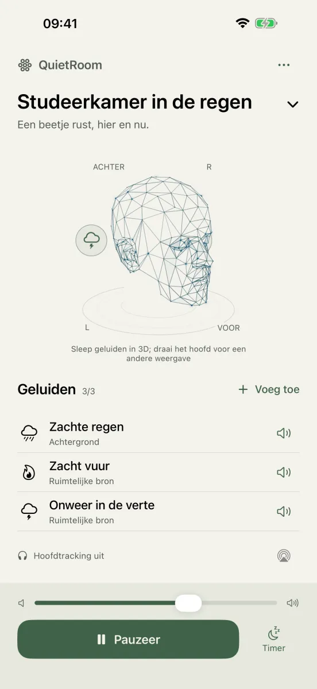
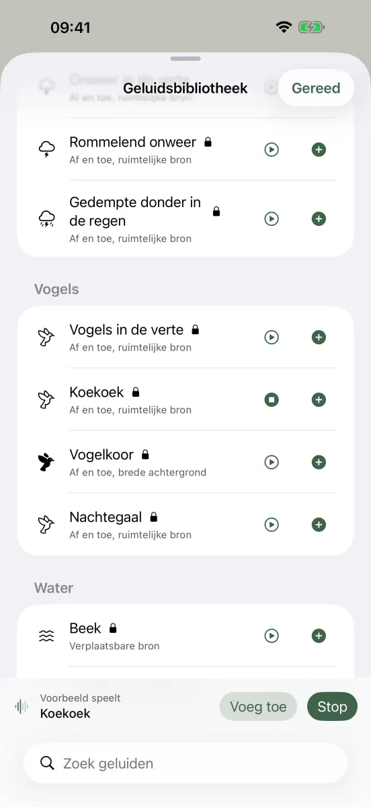
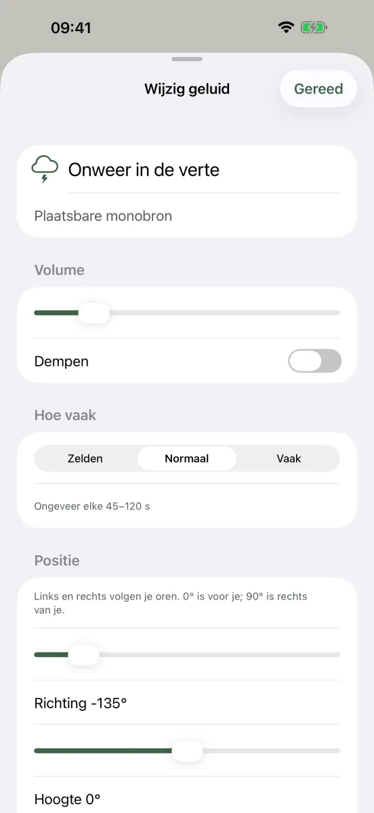
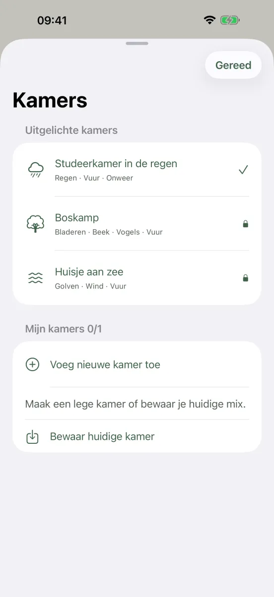

Geluid in echte ruimte
Sleep elk geluid rond een 3D-luisteraar: links of rechts, voor of achter je, boven of onder je. Of stel richting, hoogte en afstand precies in. Brede achtergronden blijven stil om je heen staan.
Voor iPhone · iOS 18 of nieuwer
QuietRoom plaatst natuurgeluiden om je heen: regen op het raam links van je, een beek voor je, een vuur vlak achter je. Zet je koptelefoon op, begin met luisteren en richt de kamer in tot het goed voelt.

Sleep elk geluid rond een 3D-luisteraar: links of rechts, voor of achter je, boven of onder je. Of stel richting, hoogte en afstand precies in. Brede achtergronden blijven stil om je heen staan.
Regen, onweer, vogels, beken, golven, wind, insecten, voetstappen en vuur. De opnamen variëren natuurlijk, zodat de kamer nooit als een korte loop klinkt. Beluister van elk geluid een voorbeeld, ook Pro, voordat je het toevoegt.
Onweer, vogelzang, druppels en voetstappen komen af en toe voorbij. Kies per geluid Zelden, Normaal of Vaak. Voetstappen kunnen ook doorlopend wandelen.
Begin met Studeerkamer in de regen, Boskamp of Huisje aan zee, of start met een lege kamer. Wijzigingen worden automatisch bewaard; geef bewaarde kamers op elk moment een andere naam, dupliceer of vervang ze.
Met een geschikte koptelefoon blijven ruimtelijke geluiden op hun plek als je je hoofd draait. Een gewone koptelefoon geeft nog steeds vast ruimtelijk geluid.
Geen account, geen advertenties, geen analytics. De geluiden zitten in de app, dus luisteren, bewerken en bewaren werkt zonder verbinding. Een slaaptimer laat het geluid zacht wegvloeien.



Eenmalige aankoop · geen abonnement
De App Store toont de prijs voor jouw regio.